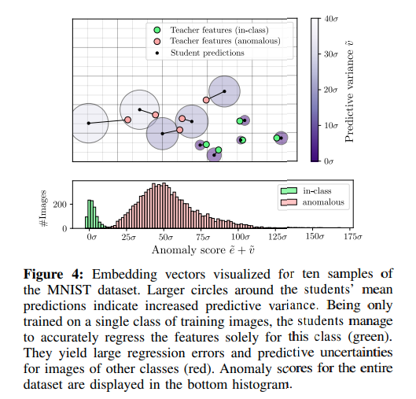

1. どんなもの？
- Unsupervised な Anomaly Detectionの枠組み
- Large Imageに対して，Patchで学習してAnomalyのSegmentationが可能
- 自然画像で学習したTeacherと工業製品で学習する複数のStudentモデル
2. 先行研究と比べてどこがすごい？
- Unsupervised な Anomaly DetectionのSegmentaionにはAutoencoder系があったが再構成誤差によるもので，不正確だった
- transfer learningの枠組みは今まで工業製品のAnomaly Detectionでは使いづらかった
- Domainの違い
- 解像度の違い

3. 技術や手法の"キモ"はどこ？
- 変数の定義
- $ \mathcal{D} = \{ I_1, I_2, \cdots, I_N \} $ : データセット
- $I_n \in \R^{h \times w \times ch}$ : 入力画像
- $S_i(I_n) \in \R^{h \times w \times d}$ : $i$番目のstudent networkに入力すると，入力と同じサイズのfeature mapが生成される
- $T(I_n) \in \R^{h \times w \times d}$ : teacher networkも同様
- $y_{r, c} \in \R^d$ : $S_i(I)$のMapのposition $r, c$における特徴ベクトル．
- $p_{r, c} \in \R^{p \times p \times ch}$ : position $r, c$における$I$のパッチ
Learning Local Patch Descriptors
- まずTeacher $T$ を学習するために，$\hat{T}$を学習する
- $\hat{T}(I_n) \notin \R^{h \times w \times d}$ である（Poolingなどによって空間解像度が落ちる）
- FDFEを適用することで，空間解像度を落とさないようにすることで$T$ を求める
- $\hat{T}$はImagenetなどの自然画像で事前学習された$P$というNetworkを蒸留（Distillation）することで学習する

- 3つのLossを最小化することで蒸留
- ↓の$p$はImagenet任意のデータセットの画像からCropしたもの $$ \mathcal{L}(\hat{T})=\lambda_{k} \mathcal{L} _ {k}(\hat{T})+\lambda_{m} \mathcal{L} _ {m}(\hat{T})+\lambda_{c} \mathcal{L}_{c}(\hat{T}) $$
Knowledge Distillation.
$$ \mathcal{L}_{k}(\hat{T})=|D(\hat{T}(\mathbf{p}))-P(\mathbf{p})|^{2} $$
Metric Learning
要はtriplet loss $$ \mathcal{L} _ {m}(\hat{T})=\max \{0, \delta+\delta^{+}-\delta^{-}\} $$
$$ \delta^{+}=\left|\hat{T}(\mathbf{p})-\hat{T}\left(\mathbf{p}^{+}\right)\right|^{2} $$
$$ \delta^{-}=\min \{\|\hat{T}(\mathbf{p})-\hat{T}(\mathbf{p}^{-})\|^{2},\|\hat{T}(\mathbf{p}^{+})-\hat{T}(\mathbf{p}^{-})\|^{2}\} $$
Descriptor Compactness
$c$ をcurrent minibatchにおける$\hat{T}$の出力の相関行列とすると $$ \mathcal{L} _ {c}(\hat{T})=\sum_{i \neq j} c_{i j} $$
Ensemble of Student Networks
- $\mu \in \R^{d}$, $\sigma \in \R^{d}$
$\mathcal{D}$のすべての画像を$T$に入力して得られた全Feature mapのh, w方向の平均と分散 - $M$個のstudent networkをrandom initialize．構造は$T$と同じもの
- 入力をパッチにしなくても，パッチ相当$p_{r, c}, [r \in \{0, 1, \cdots, h\}, c \in \{0, 1, \cdots, w\}]$の特徴抽出が可能
- studentの出力ベクトル$y_{r,c}$をガウス分布としてモデリングすると，
（$\mu _ {r, c}^{S_{i}}$ は$y_{r,c}$の平均，$s$はconstant covariance） $$ \operatorname{Pr}\left(\mathbf{y} | \mathbf{p} _ {r, c}\right)=\mathcal{N}\left(\mathbf{y} | \boldsymbol{\mu} _ {r, c}^{S_{i}}, s\right) $$
- loglikelihood 最大化によって最適化する $$ \mathcal{L}\left(S_{i}\right)=\frac{1}{w h} \sum_{r, c}\left|\boldsymbol{\mu}_{r, c}^{S_{i}}-\left(\mathbf{y}_{r, c}^{T}-\boldsymbol{\mu}\right) \operatorname{diag}(\boldsymbol{\sigma})^{-1}\right|_{2}^{2} $$
異常度の算出
-
studentのloglikelihoodの平均 $$ \begin{aligned} e_{r, c} &=\left|\boldsymbol{\mu} _ {r, c}-\left(\mathbf{y} _ {r, c}^{T}-\boldsymbol{\mu}\right) \operatorname{diag}(\boldsymbol{\sigma})^{-1}\right| _ {2}^{2} \\ &=\left|\frac{1}{M} \sum_{i=1}^{M} \boldsymbol{\mu}_{r, c}^{S_{i}}-\left(\mathbf{y}_{r, c}^{T}-\boldsymbol{\mu}\right) \operatorname{diag}(\boldsymbol{\sigma})^{-1}\right|_{2}^{2} \end{aligned} $$
-
studentたちの回答のばらつきをみる $$ v_{r, c}=\frac{1}{M} \sum_{i=1}^{M}\left|\boldsymbol{\mu}_{r, c}^{S_{i}}\right|_{2}^{2}-\left|\boldsymbol{\mu}_{r, c}\right|_{2}^{2} $$
-
↑2つのscoreを合わせて $$ \tilde{e} _ {r, c}+\tilde{v} _ {r, c}=\frac{e_{r, c}-e_{\mu}}{e_{\sigma}}+\frac{v_{r, c}-v_{\mu}}{v_{\sigma}} $$ 
Multi-Scale Anomaly Segmentation
- $L$種類のreceptive fieldのteacherとstudentを学習させれば，Multi-scaleの枠組みも可能 $$ \frac{1}{L} \sum_{l=1}^{L}\left(\tilde{e}_{r, c}^{(l)}+\tilde{v}_{r, c}^{(l)}\right) $$
4. どうやって有効だと検証した？
- Imagenetで学習したResnet18を$P$として，512次元の特徴を抽出させる
- MNIST，Cifar10での実験では$p=33$で実験

- MVTecでも実験
- teacherをshallowにするために，
$P$の出力をPCAして累積寄与率95%になるように次元数削減しているらしい
- teacherをshallowにするために，

5. 議論はあるか？
- 公式実装待ち